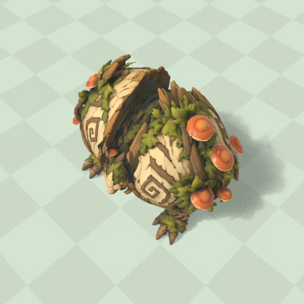

Смерть


Смерть: 12 кадров / 0,4 с. Дети появляются на 12-м тике, затем 8 тиков разлёта. Три отдельные части модели, исходная фактура и риг; 23 128 треугольников. Кадры Blender показывают позы; окончательная проверка вместе с детьми и VFX — в игровом стенде.

Раскрытие створок и присед показывают подготовку. Контакт 18, возврат до 30 — игровые сроки сохранены.